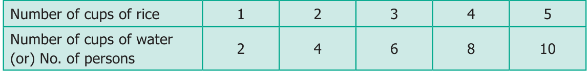
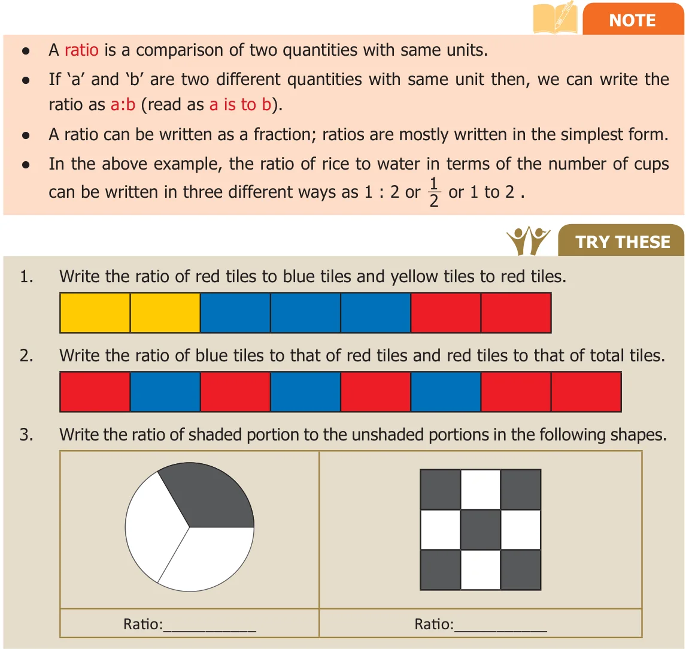
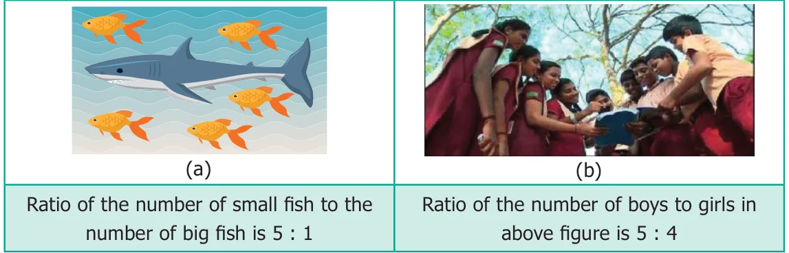
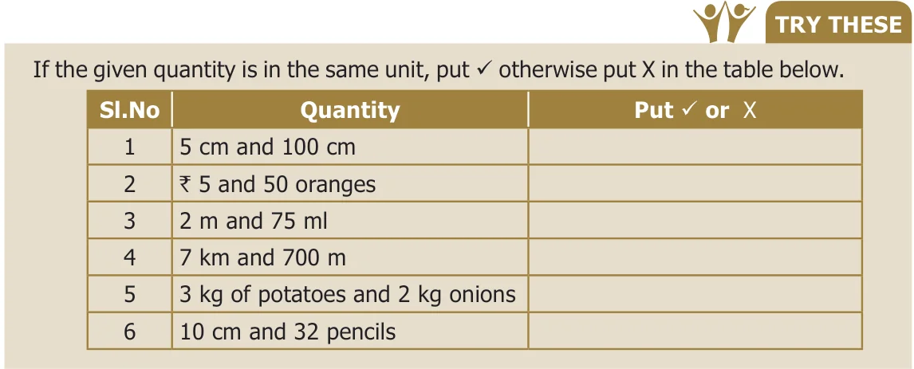
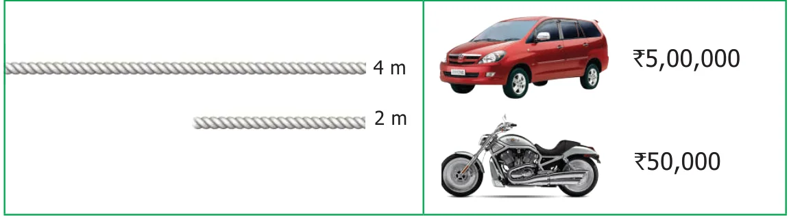
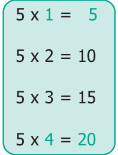
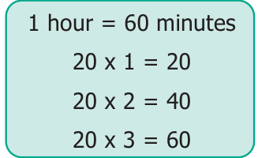
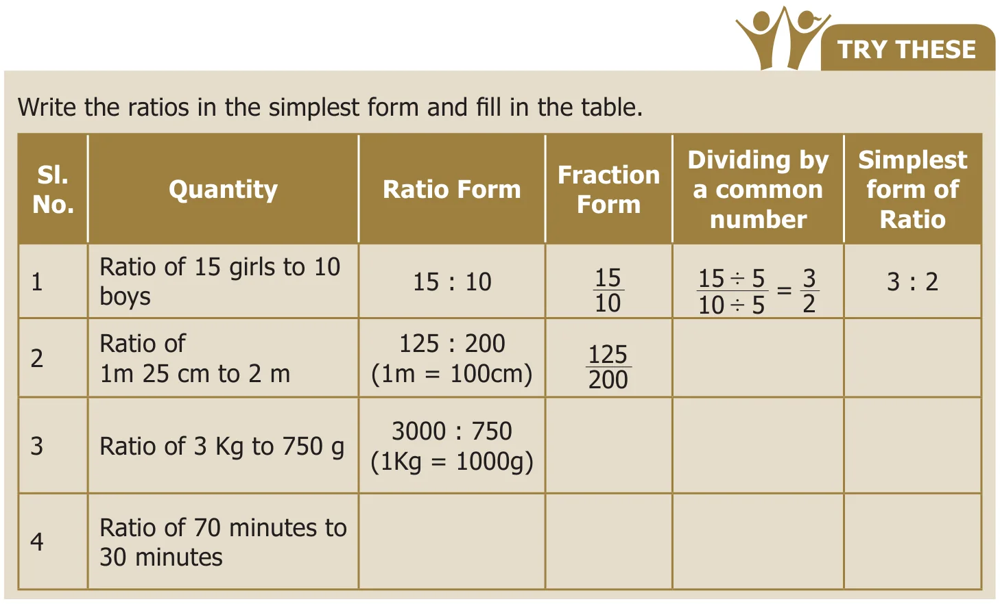

Ratio
Think about this Situation
Let us consider a situation of cooking rice for two persons. The quantity of rice required for two persons is one cup. To cook every one cup of rice, we need to add two cups of water. Assuming that 8 more guests join for lunch, will the use of ratio help us in handing this situation?
The number of cups of rice and water required are given below.
Do You Know?
It is possible to trace the origin of the word "ratio" to the Ancient Greek Medieval. Writers used the word proprotio ("proportion") to indicate ratio and proportionalities ("proprotionality") for the equality of ratios. Early translators rendered this into Latin as ratio ("reason"; as in the word "rational")

In all the cases, the number of cups of water (or) the number of persons is 2 times the number of cups of rice. So, we write
Number of cups of rice : Number of cups of water (or) the number of persons \(= 1 : 2\)
Such comparison is called as a Ratio.

3.2.1 Properties of Ratio
- A ratio has no unit. It is a number. For example, the ratio of 8 km to 4 km is written as \(8 : 4 = 2 : 1\) and not 2 km : 1 km
- The two quantities in a ratio should be of the same unit. The ratio of 4 km to 400 m is expressed as \((4 \times 1000) : 400 = 4000 : 400 = 10 : 1\)
- Each number of the ratio is called a term.
- Order of the terms in a ratio cannot be reversed.
A few examples are given below.

In the above example, the ratio of the number of small fish to the number of big fish is 5 : 1. The same information cannot be written as 1 : 5 and so, 5 : 1 and 1 : 5 are not the same.
If in a class, there are 12 boys and 12 girls, then the ratio of number of boys to the number of girls is expressed as 12 : 12 which is the same as 1 : 1.

3.2.2 Ratios in simplest form
Think about these situations

- The larger rope is 4 m long and the smaller rope is 2 m long. This is expressed in the form of ratio as 4 : 2 and the simplest form of ratio of the larger rope to the smaller rope is 2 : 1 (See Fig. 3.1 (a))
- The cost of a car is ₹5,00,000 and the cost of a motorbike is ₹50,000. This is expressed as \(500000 : 50000 = 50 : 5\) and the simplest form of ratio of the car to the motorbike is 10 : 1 (See Fig. 3.1 (b))

3.2.3 Simplifying ratios of same unit
Example 3.1
Simplify the ratio 20 : 5.
Solution
Step 1 : Write the ratio in fraction form as \(\frac{20}{5}\).
Step 2 : Divide numerator and denominator by 5. That is, \(\frac{20 \div 5}{5 \div 5} = \frac{4}{1} = 4 : 1\)
This is the ratio in the simplest form.
Example 3.2
Find the ratio of 500 g to 250 g.
Solution
\(500\text{ g to }250\text{ g} = 500 : 250 \Rightarrow \frac{500}{250} = \frac{500 \div 250}{250 \div 250} = \frac{2}{1} = 2 : 1\)
This is the ratio in the simplest form.
Example 3.3
Madhavi and Anbu bought two tables for ₹750 and ₹900 respectively. What is the ratio of the prices of tables bought by Anbu and Madhavi?
Solution
The ratio of the price of tables bought by Anbu and Madhavi
\(= 900 : 750 = \frac{900}{750} \Rightarrow \frac{900 \div 150}{750 \div 150} = \frac{6}{5} = 6 : 5\)
This is the ratio in the simplest form.

3.2.4 Simplifying ratios of different units
Example 3.4
What is the ratio of 40 minutes to 1 hour?
Solution
Step 1: Express the quantity in the same unit. (Hint: 1 Hour \(= 60\) minutes)
Step 2: Now, the ratio of 40 minutes to 60 minutes is \(40 : 60 \Rightarrow \frac{40}{60} = \frac{40 \div 20}{60 \div 20} = \frac{2}{3} = 2 : 3\)
This is the ratio in the simplest form.
